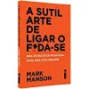

É um romance clássico que se passa na Inglaterra rural do início do século XIX. A história gira em torno da família Bennet, composta por cinco filhas, e foca especialmente em Elizabeth Bennet, a segunda filha mais velha. Elizabeth é uma jovem inteligente e espirituosa que desafia as convenções sociais de sua época. A trama principal envolve o relacionamento entre Elizabeth e Fitzwilliam Darcy, um homem rico e reservado. Inicialmente, Elizabeth vê Darcy como arrogante e orgulhoso, enquanto Darcy luta contra seus próprios preconceitos em relação à classe social de Elizabeth. Ao longo da história, ambos personagens passam por um processo de autoconhecimento e transformação, superando seus orgulhos e preconceitos para encontrar o amor verdadeiro. O livro explora temas como classe social, casamento, e as expectativas sociais da época, tudo isso com uma dose de humor e ironia característicos de Jane Austen. Espero que essa sinopse tenha sido útil! Se você tiver mais perguntas ou quiser discutir algum aspecto específico do livro, estou aqui para ajudar.
Download: Orgulho e PreconceitoA Sutil Arte de Ligar o Foda-se, de Mark Manson, é um livro de autoajuda que desafia as convenções típicas do gênero. Manson defende que, em vez de buscar uma vida de sucesso e felicidade absoluta, devemos aprender a aceitar as limitações e frustrações inevitáveis da vida. O autor argumenta que a chave para uma vida mais satisfatória é escolher com sabedoria onde investir nossas preocupações e energia. Ele propõe uma abordagem mais realista e prática para lidar com os problemas, focando na importância de valores sólidos e na aceitação dos desafios. Manson utiliza uma linguagem direta e, muitas vezes, provocativa para estimular uma reflexão mais profunda sobre o que realmente importa, incentivando os leitores a "ligar o foda-se" para as trivialidades e se concentrar no que é verdadeiramente significativo.
 Download: Sutil Arte de Ligar o Foda- seTudo é Rio, de Carla Madeira, é um romance que mergulha na complexidade das relações humanas e nas profundezas da alma. A trama gira em torno de uma mulher que enfrenta a dor e a perda enquanto busca por um significado mais profundo na vida. A narrativa explora temas como amor, solidão, e o poder da transformação pessoal. A protagonista é uma mulher que, após uma série de eventos que a abalam profundamente, encontra-se em um momento de reflexão e reavaliação. Ela embarca em uma jornada de autoconhecimento que a leva a confrontar suas próprias inseguranças e a buscar novos horizontes. O livro se desenrola através de uma prosa poética e introspectiva, oferecendo ao leitor uma visão rica e emocionante da experiência humana. "Tudo é Rio" é uma obra que convida à reflexão sobre a capacidade de resiliência e a importância de encontrar a própria verdade no meio das adversidades da vida.
Download: Tudo é Rio